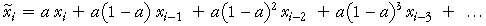
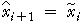

Glättung bis zum Ende der Reihen
Ein Problem im Gebrauch von gleitenden Mittelwerten, um Zeitreihen zu glätten, ist , dass nicht für geglättete Werte für die letzten Zeiten gesorgt sein kann. Zum Beispiel, wenn die Lauflänge 9 ist, ist der letzte geglättete Wert der Mittelwert der letzten 9 Werte und stellt einen geglätteten Wert, der 5 Zeiträume von dem Ende der Reihe entfernt ist, bereit – geglättete Werte können nicht für die letzten 4 Zeiten gefunden werden.
Eine Lösung ist der Gebrauch der exponentiellen Glättung. Der erste geglättete Wert wird als selber Wert, wie der erste Wert in der Reihe, definiert,

Anschließende exponentiell geglättete Werte sind “ gewichtete Mittelwerte“ des aktuellen Wertes zu dieser Zeit und des vorhergehenden geglätteten Wertes,

wenn die geglättete Konstante a ein Wert zwischen 0 und 1 ist.
Alternative Formeln
Mit einer kleinen algebraischen Manipulation kann die Formel auch so ausgedrückt werden

Der geglättete Wert ist daher nur von früheren Werten der Reihen abhängig, so können wir exponentiell geglättete Werte bis zum Ende der Reihen erhalten. Zum Beispiel, wenn a = ½

Beachte hier, dass der geglättete Wert mehr Gewicht in der jüngsten Vergangenheit bringt (was eine sinnvolle Sache ist). Je näher a an 1 heran kommt, desto kleiner ist der Einfluss der früheren Werte in der Reihe.
Prognose zukünftiger Werte
Der letzte exponentiell geglättete Wert in der Reihe kann als Prognose zukünftiger Werte genutzt werden. Wenn Daten einschließlich bis zur Zeit i verfügbar sind, dann ist die Prognose für den nächsten Zeitraum (i + 1) der exponentiell geglättete Wert zur Zeit i. Wir schreiben das als

x beschreibt eine Prognose und x beschreibt den exponentiell geglätteten Wert. Um in weiterer Zukunft zu prognostizieren, brauchen wir deshalb denselben exponentiell geglätteten Wert, im Allgemeinen,

Wenn die exponentiell geglätteten Werte von der geglätteten Konstante abhängen, so beginne mit der Prognose.
British Airways Aktienhandel
Das Zeitreihendiagramm unten zeigt die Anzahl der gehandelten British Airways Aktien in den ersten 57 Handelstagen des Jahres 2002 – zwischem dem 02. Januar und dem 21. März.
In den meisten kurzen Zeiträumen ist die Haupt-Determinante von Aktienkursen oder Volumenbewegungen eher Autokorrelation als der Trend.( Allgemeine Trends an der Börse sind in der Regel ziemlich langsam.) Wir werden hierfür eine exponentielle Glättung der Rohdaten nutzen, ohne zuerst einen Trend der Daten zu entfernen.
Nutze den Schieberegler, um die Werte der geglätteten Konstante a anzupassen und beobachte ihre Auswirkung auf die Glättung der Reihe.
Klicke auf Datenwerte; die grüne Schattierung zeigt, welcher der Ausgangswerte irgendeinen geglätteten Wert beeinflusst – je dunkler das grün, desto größer ist der Einfluss.Zeitreihen mit Trend
Das obige Beispiel hat keinen langfristigen Trend. Jedoch unterschätzt bei einer Zeitreihe mit einem steigenden Trend die exponentielle Glättung der Rohdaten tendenziell den Trend. Ähnlich werden die geglätteten Reihen zu hoch, wenn dort ein abnehmender Trend ist.
Verwende exponentielle Glättung nicht bei einer Zeitreihe mit Trend.
(Dort sind Änderungen an exponentieller Glättung vorhanden, die in Gegenwart eines Trends gebraucht werden können, aber diese sind anspruchsvoller.)
Weltweite Reisproduktion (Millionen Tonnen)
Die Zeitreihe unten zeigt einen steigenden linearen Trend.
Verringere die exponentielle Glättungskonstante und beobachte, dass die exponentiell geglätteten Werte systematisch unter der Reihe liegen.